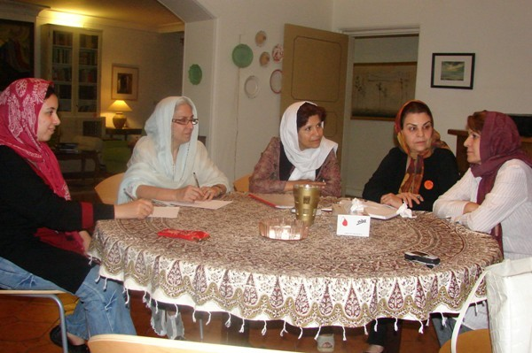
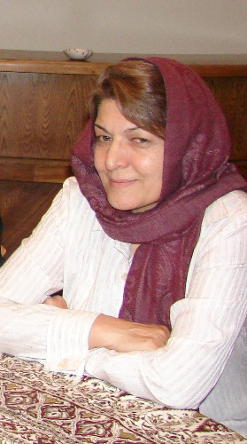
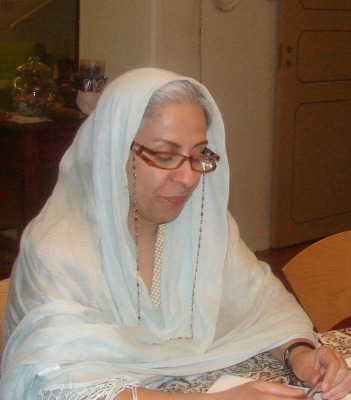
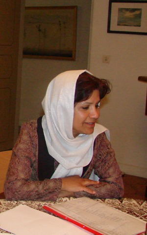
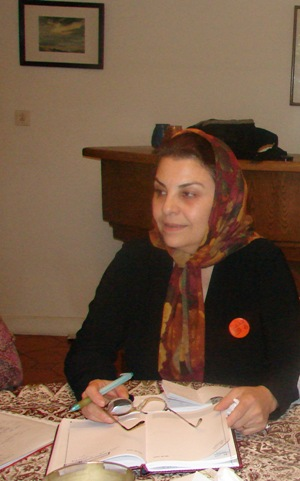
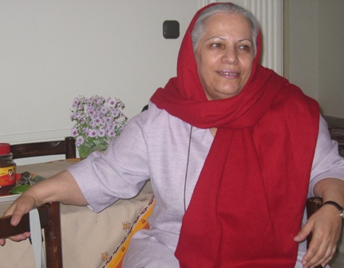

پذيرش > مقالات > گفتگو با اعضا > روایتی مادرانه از کمپین : هنوز گیس سفیدمان مقبولیت دارد
 در آستانه دومین سالگرد کمپین در آستانه دومین سالگرد کمپین

 روایتی مادرانه از کمپین : هنوز گیس سفیدمان مقبولیت دارد روایتی مادرانه از کمپین : هنوز گیس سفیدمان مقبولیت دارد
5 شهریور 1387 - تنظیم:مریم زندی - نسخه قابل چاپ
نمای اول : زندان هستم. اسمم را پشت میکروفن می خوانند. به دفتر زندان که می روم می گویند رئیس زندان گفته برو به مادرت زنگ بزن،پشت در اوین است. تا به تلفن برسم صدبار می میرم و زنده می شوم. مادرم هنوز خبر نداشت که من دستگیر شده ام.بیمار بود و می ترسیدم طاقت نیاورد. صدای ناهید میرحاج و ناهید جعفری را که می شنوم خاطرم جمع می شود. زودتر از مادرم خودشان را به اوین رسانده اند تا تنها نباشد. از آن روز تا روز آزادی من همه جا همراه مادرم بودند. مثل همیشه که به محض بازداشت اعضای کمپین زودتر و بیشتر از همه کنار خانواده هایشان هستند. مادران کمپین اند و زن های روزهای سخت...
نمای دوم: زندانم هنوز. می خواهند راحله را اعدام کنند هیچ کاری از هیچ کس برنمی آید. دست به دامن مادران کمپینی می شویم و خدیجه مقدم در سرمای سخت سراب، به روستای راحله می رود. مادر است و تاب بی عدالتی را ندارد. به زندانی ها که می گویم باور نمی کنند. راحله اعدام شد اما در آخرین دقیقه های زندگی اش پیغام داده بود مهم نیست که اعدام می شوم. خوشحالم که به فکرم بودید، هیچ کس تا به حال اینقدر برایم مادری نکرده بود.
نمای سوم: حکم زندان دل آرام آمده. دو سال زندان تعزیری. همه شوکه شده ایم. مادرها سینه سپر می کنند و با مادر دل آرام راهی قوه قضاییه می شوند. همه شان هستند از خدیجه و شهلا انتصاری گرفته تا ناهید ها و احترام شادفر با عصای چوبی اش. محکم جلو می روند و از دل آرام دفاع می کنند و می خواهند که حکم متوقف شود. تلاش هاشان به ثمر می رسد. در آخرین روزها دستور توقف حکم می رسد.
کمیته مادران کمپین یکی از تجربه های ناب کمپین است که در روزهای سخت بازداشت اعضا و بر اساس نیازهای جوانان کمپینی به پشتیبانی های مادرانه شکل گرفت.در آستانه سه سالگی کمپین درباره این کمیته و روش های فعالیت آن با خدیجه مقدم، ناهید میرحاج، احترام شادفر، ناهید جعفری و مریم زندی از اعضای کمیته مادران به گفتگو نشستیم.
مریم حسین خواه

مریم حسین خواه: کمیته مادران چه گونه تشکیل شد واز اول چه نیازی احساس کردید که این کمیته تشکیل شد؟
خدیجه مقدم : خوب وقتی کمپین تشکیل شد ما یک کادر پشتیبانی درست کردیم و یک شماره تلفن هم به بچه ها دادیم که اگر اتفاقی افتاد به این شماره تلفن بزنند تا به کمکشان برویم و توصیه های امنیتی را هم به آنان کردیم .وقتی زینب پیغمبرزاده دستگیر شدو به شماره پشتیبانی زنگ زد، تلفن دست من بود و خودم را به او رساندم.
من آن زمان خیلی زینب را نمی شناختم ،وقتی از او سؤال کردم که پدرو مادرت خبر دارند، گفت : نه پدرم خبر ندارد و مادر هم ندارم. همان جا حس غریزی مادری به من دست داد و به آن ها گفتم من مادرش هستم و وقتی هم با او به کلانتری گیشا رفتیم گفتم باید پیشش بمانم او قلبش ناراحت است و وقتی از من شناسنامه خواستند گفتم: نه ،من مادر بیولوژی او نیستم مادر اجتماعی او هستم من او را بزرگ کرده ام .
این قضیه باعث شد که با دوستان صحبت کنیم و با مادرانی که در کمپین بودند کمیته ای تشکیل دهیم. اولین حرکتمان هم این بود که از جوان ها بخواهیم مادرانشان را دعوت کنند که عده ای از این مادران هم عضو کمیته مادران شدند. در حققیت ما هم همان کارهای کمیته های دیگر مثل امضا جمع کردن و ... را انجام می دادیم و تنها فرق ما با کمیته های دیگر این بود که سپر بلا شده بودیم و هر وقت برای بچه ها اتفاقی می افتاد ما خودمان را به آنها می رساندیم .تشکیل آن هم برمی گردد به شش ماه بعد از تشکیل کمپین یعنی اسفند سال 1385 ، که شب برگزاری انتخابات بود و زینب با دفترچه ها به کرج می رفت که دستگیر شد.
از طرف دیگر از زمان شروع کمپین جوان ها مدام از ما سؤال می کردند که چرا پدرو مادرهای ما این قدر به ما فشار می آورند مگر سال های قبل چه به شماها گذشته و چه خبربوده؟ و این باعث شد ما از مادران بچه ها بخواهیم که جلسه ای تشکیل بدهیم و ببینیم چه خبراست ؟ و برای آن ها توضیح دهیم که حرکت ما مسالمت آمیز و مدنی است و این مدنی ترین حرکتی است که می شود کرد.
ناهید جعفری : در آن جلسه به غیراز مادرانی که عضو کمپین بودند، مادران اعضای جوان کمپین هم بودند که بعضی از آنها حتی به کمپین هم پیوستند و البته برخی شان به دلایل گرفتاری مرتب در جلسات شرکت نکردند .
احترام شادفر : در حققیت این کمیته برای پشتیبانی از بچه ها و روحیه دادن به خانواده هایشان تشکیل شد و فعالیت هایش اساسا حمایتگر بود.
مریم حسین خواه : نشست هایی که با مادران اعضای جوان کمپین گذاشتید از اولین فعالیت های کمیته مادران بود. این نشست ها چقدر تاثر گذار بودند و چقدر توانستند نگرانی خانواده ها از فعالیت فرزندانشان را کم کنند؟
خدیجه مقدم : مادرها وقتی ما را می دیدند که زنان جا افتاده ای هستیم و شخصیت های معقولی هستیم و خانه و زندگی ما را می دیدند به کمپین اعتماد پیدا می کردند در واقع یک مقدار ازاعتبار کمپین ،را مادران به کمپین آورند.
مثلا پدر زینب وقتی مرا می دید که برای پیگیری کارهای دخترش با او می رفتم،می گفت: فکر نمی کردم خانم هایی مثل شما هم امضا جمع می کنند، حتی بچه ها و خود زینب می گفتند وقتی به خانواده هایمان می گوییم می رویم برای جلسه خانه خانم مقدم خیلی خیالشان راحت بود . خانواده ها هم وقتی چهره ما مادرها را می دیدند که چیز عجیب و غریبی نیستیم به ما اعتماد پیدا می کردند .

به هر حال تعدادی از مادران پس از این جلسات جذب کمپین شدند و همین قدر هم که مادرها مانع بچه هایشان نشدند و حتی امضا ء هم جمع کردند خودش خیلی خوب است. کمپین این طوری نیست که همه مرتب در جلسات شرکت کنند خوب هر کس در محیط کارش و زندگی اش دارد کار می کند. یک وقت کمیته مادران با چهار نفر و وقت دیگر با هیجده نفر تشکیل جلسه می دهد هنوز هم مادرهایی که با ما آشنا می شوند برایشان این کمیته بسیار جالب است همان طور که برای خود ما جالب است.
ناهید جعفری : من می خواهم چیزی را به صحبت های خدیجه اضافه کنم همان طور که در کمیته های دیگرهم است درکمیته مادران هم طیف خاصی و فکر خاصی نیست که عمل می کند این حرکت کاملا" مسالمت آمیز است و مسئله ما فقط قوانین است که برای طبقه خاصی هم نیست. این قضیه هم برای زن روستایی و هم زن شهری است و اصولا دغدغه همه زنان است.
مریم حسین خواه:روش شما برای ارتباط گرفتن با خانواده ها چطور بود؟در واقع می خواهم بپرسم پس از دستگیری اعضای کمپین کمیته مادران از چه روشهای حمایتگرانه ای استفاده می کرد؟
ناهید میرحاج : اولین تجربه ما زینب بود که باید بیست میلیون وثیقه می گذاشت پدرش هم اجاره نشین بود و نداشت .ما این مطلب را با بچه های کمپین در میان گذاشتیم و از پدرو مادرهای آنان کمک خواستیم . پدرو مادر راحله با این که مریض بودند روز قبل از دادگاه به شهرستان رفتند و ملکشان را کارشناس ارزیابی کرد و تا قبل از ساعت دادگاه ساعت دو بعد از ظهر خودشان را به دادگاه رساندند و سند را که پانزده میلیون قیمت گذاشته بودند آورند و پدر زینب همان پانزده میلیون را گذاشت و روز بعد او آزاد شد. این پدر و مادر چون با بچه های کمپین و کمیته مادران ارتباط داشتند دیگران را هم مانند فرزند خود می دانستند و مادر راحله با اینکه آن موقع زیاد فعال نبود اما برای زینب شهرستان هم رفت .
مریم زندی : البته بعد از دستگری راحله، مادرش فعال تر هم شد به گونه ای که چندین مصاحبه انجام داد و یک نشست در خانه شان برگزار کرد و حتی درجلسات و کارگاه ها شرکت می کرد.
خدیجه مقدم: مادر امیر یعقوبعلی هم بعد از دستگیری پسرش بسیار فعال شد. من یادم است که هنگام دستگیری امیربه خاطر جمع آوری امضا ، خواهرش می گفت مادرم نباید بفهمد و وقتی هم فهمیده بود غش کرده بود. ولی وقتی ما مادران کمپین به دیدنش رفتیم خیلی بهتر شد . من وقتی به عنوان مادر امیر به کلانتری رفتم و از امیر تعریف کردم و گفتم ببینید ما چه پسری داریم و چه تربیتی دارد گفتند بله اما خوب، نصیحتش کنید که درسش را بخواند و به کارهای دیگر کاری نداشته باشد و گفت چرا کارها را گردن این ها می اندازید گفتم درسش را می خواند و فعالیتش را هم می کند والا با این سن کمش سال چندم دانشگاه علامه نبود، خلاصه در کلانتری من از همه نظراز او دفاع کردم و آن ها اصلا " باورشان نمی شد که من مادر او نیستم.
مادر امیر هم درست است که مدتی حالش بد شد چون از امیر خبری نداشتند و نمی گذاشتند امیر تلفن بزند ولی وقتی گفتیم که باید مصاحبه کنی و حرفت را بزنی و ما نمی توانیم به جای شما حرف بزنیم پذیرفت .بخصوص که بعد از مصاحبه هایش با رادیو ها امیر هم بعد ا مدتها به خانه زنگ زد و تاثیر فعالیت های مادرش به او ثابت شد.
بعدها وقتی مازیار را گرفتند مادر امیر به مادر مازیار دلداری می داد و این پروسه خیلی قشنگ بود .
مریم حسین خواه : فعالیت های کمیته مادران فقط مختص حمایت و پشتیبانی از خانواده ها بود یا اینکه بریا آزاید اعاضی کمپین با دستگاه های قضایی هم وارد مذاکره می شدید؟
ناهید جعفری : در مسائل قانونی هم ما همیشه همراه خانواده ها بودیم و اقدام می کردیم ،مهمترین اقدام ما سر مسئله دلارام علی بود. که کمیته مادران برای قوه قضائیه آقای جمشیدی نامه نوشت.
ناهید میرحاج : برای دلارام علی ما از منشی شاهرودی وقت خواستیم و گفت شما را نمی پذیرد، اما ما انقدر تلاش کردیم که توانستیم چهل و پنج دقیقه با او راجع به بچه ها و مسالمت آمیز بودن حرکتمان و فعالیت های کمپین حرف بزنیم.
مریم حسین خواه: در آن جا می گفتید که از مادران کمپین هستید ؟
ناهید میرحاج :بله ما اول نامه رسمی به اسم مادران کمپین می نوشتیم و بعد اقدامات خودمان را انجام می دادیم. درحقیقت ما مادری کلیشه ای را از میان بردیم با غرور حرف های خودمان را می زدیم و از بچه ها دفاع می کردیم و می گفتیم این حرف ما است و این هم حرف های فرزندانمان.

و وقتی برای اولین بار نامه را با امضای کمیته مادران به دفتر شاهرودی بردیم مسئول دبیرخانه که نامه را گرفت گفت: مگر تبعیض وجود دارد.و وقتی ما برایش قوانین را و تبعیضات بین زن و مرد را توضیح دادیم. او اولین بار بود که این حرف ها به گوشش می رسید گفت : بروید پیش قاضی کشیک و گفت ما نامه را نمی توانیم بگیریم شما نه مادرش هستید و نه وکیلش گفت مادرش باید بیاید ولی دفعه های بعد وقتی به دفتر ایشان می رفتیم ما را می شناخت اسم کمپین را درست تلفظ می کرد و این فعالیت های ما در آنجا هم به نوعی ترویج برابری خواهی شد.
تجربه دیگر هم وقتی بود که برای هانا و روناک به کردستان پیش معاون دادستانی سنندج رفتیم . آنجا هم از بچه ها دفاع کردیم و دفترچه ها را هم بردیم و برایشان توضیح دادیم که کمپین چیست و چکار می کند.به هر حال هر جا نیاز به تلاش بوده ما کار خودمان را کردیم .
احترام شادفر: به نظر من هم روند کار بسیار مثبت بوده نمونه دلارام که موفق بود. خود نامه دادن ها بسیار تاثیر گذار بود هم روی مقامات هم برای خانواده ها . فعالیت های ما روی مادران بچه ها هم تاثیر مثبت گذاشت
مریم حسین خواه: به این ترتیب شما از وقتی که بچه ها دستگیر می شوند تا مراحل قضایی و آزادی بچه ها کنار خانواده هایشان هستید؟
ناهید میرحاج : بله و البته پس از آزادی بچه ها هم در کنار خانواده ها هستیم و همراه آن ها گل می خریم به دیدن بچه ها می رویم .
خدیجه مقدم : و یک مسئله دیگر اینکه ما خط قرمزی نداریم، چون تکلیفمان با خودمان روشن است برای التماس که نمی رویم برای دادخواهی می رویم هم با خانواده ها تماس داریم هم با مقامات هم با مادران دیگر فعالین جنبش دانشجویی و ....یعنی حتی آن ها را هم ساپورت می کنیم و این حمایت ها فقط مختص بچه های کمپین نیست مثل مورد بهاره هدایت.
مریم حسین خواه : از دل همین حمایت های فراگیر بود که مادران صلح به وجود آمد؟
خدیجه مقدم : ما وقتی برای دیدن خانواده اصانلو رفتیم و طی نامه ای ار او حمایت کردیم، بچه های کمپین به ما گفتند : که فرا کمپینی عمل کرده اید و این با فعالیت ها در چهارچوب کمپین و اهدافی که تعریف کرده ایم جور درنمی آید . خب ما هم فکر کردیم کار را فراتر ببریم و کمیته مادران ایران را تشکیل دهیم که این کمیته آغوشش برای کلیه فعالین مدنی باز باشد . این را با عده بیشتری مطرح کردیم و همینطور با خانم عبادی .
در آن زمان_ شهریور تا آبان ماه سال گذشته_ بحث جنگ هم خیلی مطرح بود و ما با عده ای از زنان که خیلی هم در کمپین فعال نبودند سراهداف صحبت کردیم و به این نتیجه رسیدیم که اسم آن را مادران صلح بگذاریم .منظورمان هم صلح خواهی به معنی همان اهداف حقوق بشری بود .الان حدود پنجاه نفر در این گروه فعالند که تمامشان فعالین کمپین نیستند ولی این ماجرا منجر به یک نهاد سازی شد برای جامعه مدنی . الان حرکت هایی که می کنیم به دفتر شاهرودی می رویم و یا ستاد حقوق بشر این مادران با ما همراهی می کنند نمونه آن هم وقتی بود که برای دستگیری محبوبه کرمی مادران صلح همراه مادران کمپین در پیگیری ها آمدند و کمک کردند.
مریم حسین خواه:یعنی تشکیل گروه مادران صلح منجر به تقویت کمیته مادران کمپین شد؟
خدیجه مقدم: بله مادران کمپین وجود دارد و کارهای خودش را می کند فقط خود من و یکی از مادران دیگر در کمیته مادران صلح هستند ولی کسانی از مادران صلح می آیند به کمپین که خیلی جالب است .
همراهی و ارتباط دو طرفه است و خود این ارتباط کمک می کند برای پیشروی کارها . مثلا " ما از پروین خواستیم که برای مادران صلح کارگاه نوشتن گذاشت و از زهره ارزنی خواستیم که یک کارگاه حقوق شهروندی بگذارد و مادران صلح توانمند شدند و یعنی فعال کردن زنان این ها الان در کارگاه ها قصه هایی می نویسند که اگر این نهاد نبود در سینه این ها این خاطرات می ماند. من در خیلی از جلسات دیگر حضور مداوم ندارم اما می بینیم که کار گروه های مختلفی در مادران صلح تشکیل شده کارگاه حقوق بشر ، که فقط به مسائل حقوق بشر می پردازد و مهمترین مسئله ای که در دستور رکار این گروه قرار دارد جلوگیری از اعدام کودکان زیر هیجده سال است .
مریم حسین خواه : که در حقیقت از مطالبات کمپین یعنی " بالا رفتن سن مسئولیت کیفری " هم است.
ناهید جعفری : همینطور است به نظر من به خاطر این که مادران کمپین در راستای اهداف کمپین تشکیل شد و اهدافش خواسته محور است روی قوانین تبعیض آمیز. مادران صلح هم خواسته محور هستند و متمرکز شده اند روی صلح .هر کدام هم در جای خود سیاست های درستی دارند. ولی به دلیل متفاوت بودن خواسته هایشان در دو نهاد متفاوت وجود دارند.
مریم حسین خواه : در واقع هنگام بازداشت های اعضای کمپین که دیدید این چتر حمایتی مادرانه چه قدر تاثیرگذاراست، خواستید اقدامات حمایتی تان را به سایر فعالین دیگر مانند دانشجویان و کارگران و ... هم گسترش دهید؟
ناهید جعفری : آلان به نظر من مادران صلح خیلی بیشتر روی این مسائل تکیه می کنند همین که برای محبوبه کرمی نامه نوشتند پیش مراجع قضائی رفتند این خیلی عالی است . در واقع مادران صلح طور دیگری حرکت می کنند یک مکملی است که حتی ما مادران کمپین هم می توانیم هنگام دستگیری ها روی تلاش آن ها حساب کنیم .
مریم زندی: به عنوان مثال درست است که هنگام دستگیری خدیجه مقدم مادران کمپین هم به نزد مقامات رفتند و فعالیت های مسالمت آمیز وی را که در گذشته هم بوده توضیح دادند ولی مادران صلح هم برای خدیجه مقدم تلاش های خودشان را کردند.
خدیجه مقدم : خوب همیشه در حرکت است که تکثر به وجود می آید اگر حرکتی وجود نداشته باشد که نهادهای مختلف به وجود نمی آید ببینید از جمع هم اندیشی حرکت زنان در بیست ودو خرداد سال 1384به وجود آمد. بعد از آن حرکت سال 1385 به وجود آمد و بعد کمپین به وجود آمد. و همینطوری این حرکت ادامه دارد.
ما واقعا" نمی توانیم بگوییم که از دل کمپین مادران صلح به وجود آمد . این حرکت است که این ها را به وجود می آورد.

مریم زندی : منظورمان این است وقتی حرکت که ایجاد می شود نیازهای خودش را در طول زمان نشان می دهد با توجه به نیازها تشکل هایی به وجود می آیند دیدیم که حرکت های کمپین محدوداست به قوانین و چهارچوبی دارد . ولی این حرکت ها گسترده است و باز تر عمل می کند حرکت سندیکایی و دانشجویی ، حسب نیاز یک تشکل بازتری به وجود می آید. و در مقاطعی هر کدام از حرکت ها پر رنگ تر می شود ولی اهداف همان حقوق بشری است.
مریم حسین خواه : فعالیت کمیته مادران محدود به اعضای کمپین و حتی فعالان اجتماعی نبود و در رابطه با زنان محکوم به اعدام که اغلب به خاطر نابرابری های حقوقی و فشارهایی که مجبور بودند تحمل کنند کارشان به اینجا کشیده شده بود هم خیلی تلاش کردید. اینقدر که حالا در بند زنان اوین، زندانی ها کمیته مادران کمپین را می شناسند و وقتی حکم اعدام می آید زنگ می زنند که این کمیته مادران تان می تواند کاری برای ما بکند ؟
خدیجه مقدم: این هم از کمپین شروع شد وقتی ناهید و محبوبه به زندان افتادند با راحله آشنا شدند .یکی از اهداف کمپین همین بود رساندن صدای زنان خاموش به ایران به دنیا به مسئولین . ما خودمان در رابطه با آموزش چهره به چهره با این زنان آشنا شدیم که خود شما هم تجربه اش را داری. فعالیت در رابطه با راحله البته فردی بود آما بی ربط به مسائل کمپین هم نبود به او تبعیض سه گانه روا داشته شده بود. چون ترک زبان بود و من هم زبان او بودم ، با او ارتباط گرفتم و پایم این طوری به این قضیه کشیده شد.
مریم حسین خواه: یعنی کمیته مادران به خاطر تجربیاتی که دارد هر جا که بتواند چه پشتیبانی از خانواده ها و چه جلوی زندان رفتن ها و چه حمایت از زنانی که هیچ دادرسی ندارند و ...اقدام می کند ؟
ناهید جعفری : به طور کلی در یک حرکت که کار مشخص است و شرح وظایف دارد و کار داوطلبانه است مسئولیت فردی به ما ایجاب می کند که کار انسانی را هم دنبال کنیم خوب یک عاطفه ای هم به وجود می اید حتی ما نسبت به مشکلات فردی خودمان هم حساس می شویم .
برای قضیه راحله شاید من اگر در کمپین نبودم به لحاظ فردی خبر دارنمی شدم اما با رابطه هایی که وجود دارد من خبر دار شدم خوب وقتی متوجه می شوی خدیجه در سرمای زمستان سخت به سراب می رود و تک و تنها به دیدن فرماندار می رود به دیدن امام جمعه می رود با خانواده راحله صحبت می کند که او اعدام نشود خوب من هم مسئولیت فردی خودم می بینم که تا صبح جلوی زندان باشم و تلاش کنم که راحله اعدام نشود. خوب کمپین این رابطه ها را تقویت وهمه را عضو یک خانواده کرده .مسئولیت های فردی ما را بالا برده ما حتی نسبت به خودمان هم حساس شدیم به روحیات هم و به مشکلات هم .
مریم حسین خواه: در مورد راحله آن موقع من در زندان بودم و در اوین زندانی ها می گفتند کمیته مادران بیشتر از خود خانواده راحله به فکر او هستند.
خدیجه مقدم : بله در مورد راحله واقعا " خیلی فعالیت شد ولی خوب نتیجه اش را که دیدید . و متاسفانه از دست ما کاری بر نیامد.
مریم حسین خواه :به غیر از اینگونه اقدامات حمایتگرانه، آیا کمیته مادران برنامه ای جداگانه برای امضا ء جمع کردن دارد من در سالگرد پارسال دیدم که تعداد امضاهای مادران بیشتر بود و مادرها شاگرد اول شدند ؟
مریم زندی: خوب بله ، ما برنامه های گروهی برای امضا جمع کردن داریم که یک مادر با جوان ها می رود و این همراهی هم برای جوان ها تجربه بسیار خوبی است و هم برای ما. آن ها از تجربیات ما استفاده می کنند و ما از خلاقیت و جسارت های آنان .
ناهیدمیرحاج : در آمارگیری های که سال گذشته درباره کمپین داشتیم همیشه یک مادرهمراه جوانان می رفت.چون در محلات حاشیه ای لازم بود که آن ها تنها نباشند.
مریم حسین خواه : این برنامه های مادران برای همراهی با جوانان فقط برای انتقال تجربه است یا به خاطر مسائل امنیتی هم است ؟
مریم زندی: بله اول مسائل امنیتی بود و بعد انتقال تجربه در بسیاری از برنامه های گروهی در کارگاه ها ما مسائل امنیتی را به ان ها گوشزد می کردیم و خود جوانان هم مایل بودند ما در کنارشان باشیم و حریمی برای آن ها درست کنیم که مصون باشند.
ناهید جعفری : خوب نگاه مردم هم مهم است . تبعیضات فقط قانونی نیست از نظر سنت وعرف هم به ما خیلی ظلم شده ما زن ها از همه نظر مورد ظلم قرار گرفته ایم الان هم د رجامعه مادرهایی خوب هستند، که در خانه باشند به سرو وضع خانه برسند وفقط یک کانون گرم خانواده درست کنند اما مادری که فعالیت اجتماعی می کند و در جامعه اعتراض می کند و د رجامع حضور دارد مادر خوبی نیست .

اما باز هم علیرغم این مطالب در جامعه هنوز گیس سفیدمان یک مقبولیتی دارد و مسئله ای که مریم جان می گوید درست است می بینیم که وقتی ما در کنار جوانان هستیم نگاه مثبت می کنند اعتماد می کنند.
مریم زندی: جوان ها هم می گویند وقتی شما هستید ما مسائل حاشیه ای کمتر داریم و د رکنار شما مصونیت داریم و با آسودگی خیال به کارشان می پردازند.
مریم حسین خواه: از همه چیز حرف زدیم ، اما خانه های اعضای کمیته مکادران که همیشه درهایشان به روی کمپین باز است را نگفتید.
خدیجه مقدم: خب چون ما خودمان مدیر خانه هستیم و کسی نیست که به ما بگوید که حالا از خانه می شود استفاده کرد یا نه؟آنها را در اختیار جوانان و جلسات و نشست ها می گذاریم و برای همین است که زیر ضرب هستیم و مثلا من را به علت های عجیب وغریب بازداشت می کنند و در شرایط بدی با توجه به مشکلات جسمی که می دانند دارم چند روز نگه می دارند.
در حقیقت چون خانه من ، خانه خودم است و فعالیت هایمان هم شفاف و قانونی در خانه ما به روی همه باز است با هر تفکرسیاسی .
در حالی که ما می بینیم در مراکش که کمپین به وجود آمد به آن ها جا دادند بودجه دادند ولی ما این جا مجبوریم به اتکا امکانات خودمان کار کنیم .
من خودم سال هاست که در این مملکت کار می کنم بد نام هم نیستم سال هاست در محیط زیست با شهرداری کار می کنم بارها به دنبال جا به شهرداری برای فرهنگسرا ها رفته ام اما جا ندادند ومن خودم مجبور شدم در خانه ام را باز کنم و واقعا امکاناتی را که یک فرهنگسرا دارد برای خانه ام تهیه کرده ام و مثلا رفتم 60 فنجان بریا نشست های کمپین خریدم.
مریم حسین خواه :سوال آخرم در مورد ساختار کمیته مادران است و اینکه برنامه هایتان را چطور هماهنگ می کنید؟
مریم زندی : جلسات کمیته مادران از چهارنفر تا بیست نفر تشکیل می شود عده ای از شرکت کنندگان فقط در مواقع اضطراری می آیند ولی سعی کرده ایم جلسات ماهی یک بار مثل اوایل تشکیل شود.
ناهید جعفری : ما مادران قرار را براین بنا گذاشته ایم که هر مادر حداکثر روزی یک امضا جمع کند و در پایان ماه که در جلسه می ایند سی امضا همراه خود در جلسه بیاورند. ولی خوب به خاطر مشکلاتی که داشتیم بعضی وقت ها جلسات دو ماه یک بار تشکیل شده. است.
احترام شادفر: خوب خود دیدن مادران در جلسات خیلی مثب بود ما در جلسات همدیگر را می دیدیم اطلاعات ردو بدل می شد که در آینده امیدوارم راه کارهای دیگری که در نظر داریم عملی شود.

خدیجه مقدم : ولی مادران هر جا که باشند در جلسات هم که شرکت نکنند مثل خانم نامی که به سفر رفته اند به کار خود جمع آوری امضا مشغولند و در راستای شغل قبلی خود فعالیت می کنند. وما یک مشکلی هم داریم این است که مادران خیلی اهل بحث و ایمیل نیستند اما در جلسات حضوری که دارند نظرات و نقطه نظرات خود را مطرح می کنند مثلا" در جلسه این ماه با حضوری مهمانانی که از شهرستان داشتیم مطرح کردند که چون کارهای ما اجرائی است ما نمی توانیم در هسته های جداگانه باشیم ما با توجه به تجربه های خودمان که هر کدام در عرصه های مختلف در جامعه حضور داشتیم خودمان کار گروه های خودمان را ایجاد کردیم و به کار خود ادامه می دهیم. کار در روستا ، فعالیتی هایی در عرصه محیط زیستی ، فعالیت دربین معلمان ، در پرستاران ، در حوزه زنان روستا و حاشیه نشینان و کارگری و این خودش یعنی تکثیر .
مریم حسین خواه: ممنون که در این میزگرد شرکت کردید و سپاسگزارم از شما و همه مادران کمپین که همیشه در سخت ترین لحظات کنار ما بودند و آغوش های مادرانه شان را بر سر ما جوان های کمپینی گشودند.
ارسال به
بالاترین
،
توییتر
،
فریندفید
،
فیسبوک
در همين بخش :
 8 مارس روزی که نمی توان از ما دریغ کرد 8 مارس روزی که نمی توان از ما دریغ کرد
با طلاق توافقی از حقارت و کتک و فحش رها شدم /گزارشی از دادگاه محلاتی: مریم مالک
تجمع مادران عزادار در رشت
تغییر ممکن است/ جلوه جواهری(26 روز پس از بازداشت کاوه مظفری)
گامهایی که با تزلزل نا آشنایند/ گرامی داشت چهلم ندا در رشت
ديگر بخش ها :
طرح یک میلیون امضا
|
مقالات
|
سایت نوشته ها
|
اخبار
|
گزارش كمپين
|
گفت و گو
|
علیه سکوت
|
كوچه به كوچه
|
نامه های شما
|
گزارش ویژه
|
گفتگو با اعضا
|
ویژه سالگرد کمپین
|
تصویر برابری
|
دل آرام علی
|
تریبون
|
مقالات
|
تاریخ شفاهی
|
خارج از چارچوب
|
کتابخانه
|
درباره کمپین
|
کمپین در شهرها
|
کمپین در بند
|
صدای تغییر
|
ویژه 22 خرداد
|
لایحه حمایت از خانواده
|
گالری
|
عشا مومنی
|
امیر یعقوبعلی
|
خدیجه مقدم
|
راحله عسگری زاده و نسیم خسروی
|
پروین اردلان،جلوه جواهری، مریم حسین خواه، ناهید کشاورز
|
زینب پیغمبرزاده
|
سعیده امین، سارا ایمانیان، محبوبه حسین زاده، ناهید کشاورز و همایون نامی
|
احترام شادفر
|
نسیم سرابندی زاده،فاطمه دهدشتی
|
وبلاگ مهمان
|
پرونده خرم آباد
|
دستگیری ها
|
مریم مالک
|
پرستو اللهیاری
|
مهرنوش اعتمادی
|
سمیه رشیدی
|
Other Languages
|
همراهان
|
«فراخوان کمپین ده روز با بهاره هدایت»
| English
|